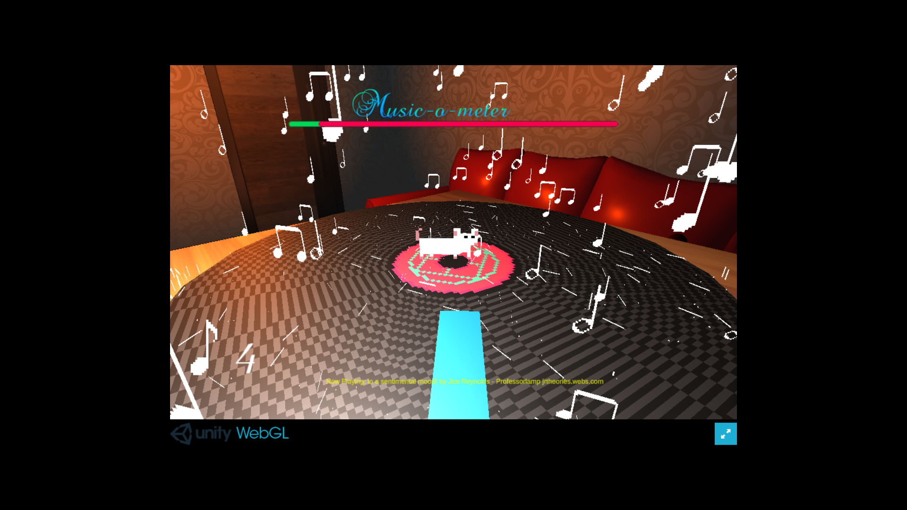
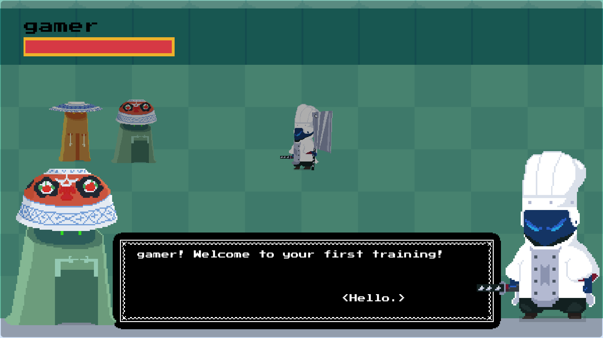
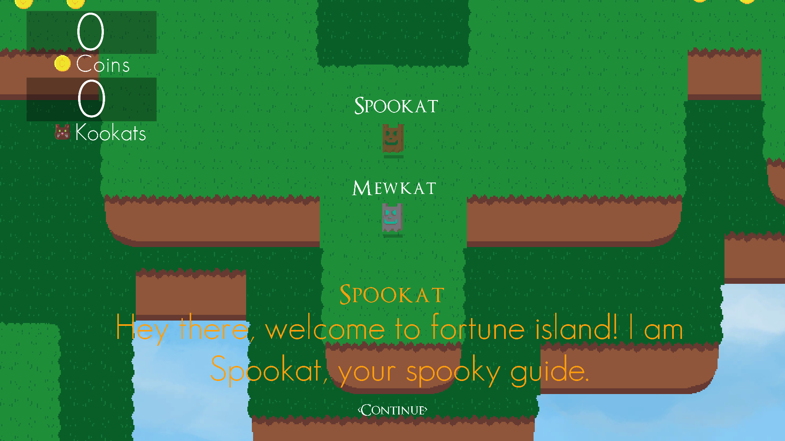

INDIE GAME DEVELOPMENT

Neon Blade main menu

Discovering game development in my late teens was one of the best things that happened. I wished I found out about it more earlier. Towards the end of my junior high school days, constantly playing computer games at home as usual, I received a message in-game from an online gaming buddy kindly inviting me to test a game that he had published on google playstore titled Neon Blade. I was intrigued to try out this game and went on to install it on my phone. After playing through a few levels in the game, I was impressed how he, a teenager like me, was able to make something like this. Even a simple working prototype like this was already a milestone for someone. I've never thought of making a game myself before. I was curious and wanted to learn too, then he pointed me to a game engine called Unity where I could get started in making games.
UNITY

Learning something new is never easy at first. It was the very first time I learned actual computer programming, learning the C# language. One of the first places to visit to learn Unity, programming, and game development was at their website itself. Unity is a cross-platform game engine developed by Unity Technologies. They have lots of free live and on-demand learning content for all levels of experience. Game development is not just limited to programming but also includes art. I also tried to learn how to make game assets such as 3d models, character sprites, simple animations, etc. Learning Unity kept me busy during the Covid-19 lockdown where I had much free time all day for a few months.
There were a couple of game prototype ideas I came up with that were left unfinished. Some were submissions for a game jam at itch.io. Game jams are fun to participate in because you get to have a limited timeframe and a specific theme to work on. Having to participate in my first two game jams in the Brackeys Jam 2020.2 and Brackeys Jam 2021.2 helped me to gain more knowledge and allowed me to compare the differences in quality between the two games I had made and the progress I made. For the second game jame, I was more prepared and learned more within a year. There was a lot of improvements.
Brackeys Jam 2020.2 submission
The Musical Prodigy
Theme: Rewind
Unfinished Prototype
Blazeful Chef
Unfinished Prototype
Graveyards and Treasure Troves
GODOT
After exploring Unity, I found another game engine called Godot. Unlike Unity, Godot is open source and is much lightweight. I find this suitable for me as I experience limited hardware capabilities in my computer. It is very small in size to download take much less space to store. Haven't gone depths with this game engine, so far I found out that it uses a language similar to Python. They also have tutorials in their website and even tutorials for users transitioning from Unity.